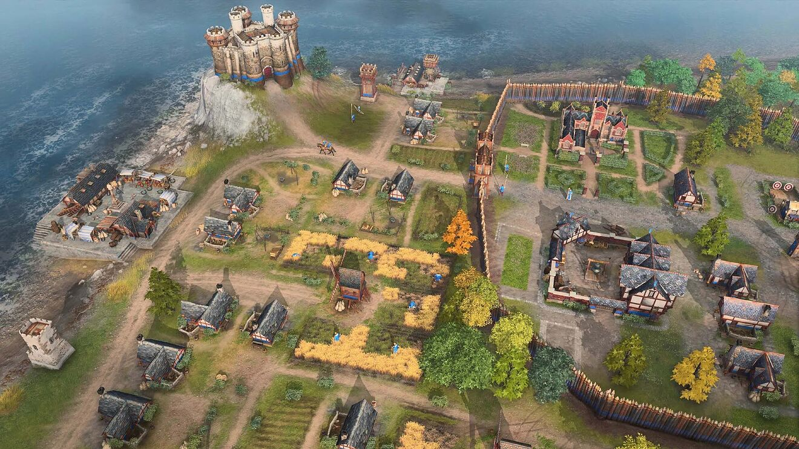
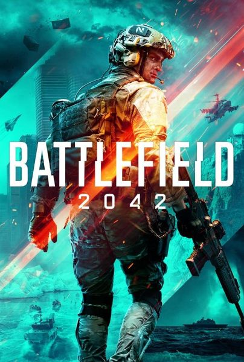
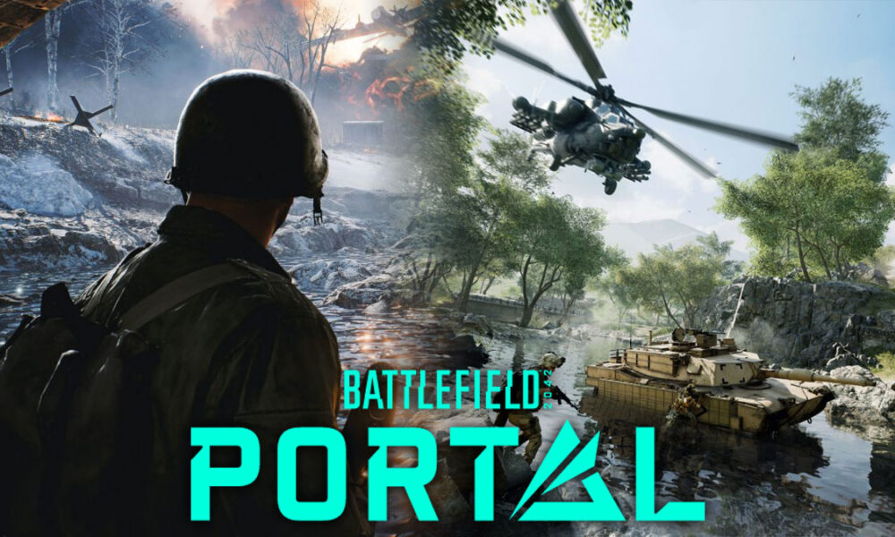
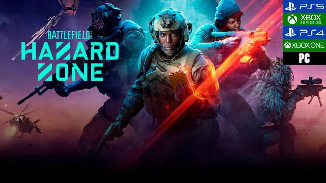

Recientemente lanzados
Age of Empires IV

Acerca del juego
Uno de los juegos de estrategia
en tiempo real más queridos vuelve a demostrar todo su esplendor con Age of Empires IV, donde serás la
estrella de las épicas batallas históricas que moldearon el mundo que hoy conocemos. Age of Empires IV
combina lo que ya le funcionó en su momento con fórmulas innovadoras para que disfrutes expandiendo tu
imperio hasta donde alcancen tus ojos; todo ello con una impresionante fidelidad visual en 4K. En
resumen,
un juego de estrategia en tiempo real modernizado y adaptado a la nueva generación.
Revive la historia: el pasado es el prólogo del futuro. Sumérgete en un escenario histórico lleno de
posibilidades en el que lucharás por la victoria contra 8 civilizaciones de todo el mundo, desde los
ingleses hasta los chinos, pasando por el Sultanato de Delhi. Construye ciudades, gestiona recursos y
lidera
a tus tropas en batallas terrestres y navales en 4 campañas independientes que suman 35 misiones y que
abarcan 500 años de historia desde la Edad Oscura hasta el Renacimiento.
 Alcanza la gloria con figuras históricas: vive las aventuras de Juana de Arco en su
afán por derrotar a los
ingleses, o comanda las poderosas tropas mongolas con Gengis Kan en sus conquistas por toda Asia. La
elección es tuya: cada decisión que tomes influirá en el devenir de la historia.
Personaliza tus partidas con mods: juega a tu manera y crea partidas personalizadas gracias a las
herramientas para acceder a contenido generado por el usuario, que estarán disponibles a principios de
2022.
Desafía al mundo entero: da el salto al juego en línea para competir, cooperar o incluso ser espectador
con
hasta 7 de tus amigos en los modos multijugador JCJ y JCE.
Aquí hay Age para todos: Age of Empires IV es una experiencia atractiva para los nuevos jugadores que
cuenta
con un sistema de tutoriales pensado para aprender lo básico de la estrategia en tiempo real y un modo
historia de la campaña pensado para que no penalice demasiado a los jugadores principiantes, pero que a
la
vez suponga un reto para los jugadores más veteranos al incluir estrategias más elaboradas, así como
mecánicas de juego y técnicas de combate innovadoras.
Disponible en:
Requisitos del sistema
| Mínimos | Recomendado |
|---|---|
| Requiere un procesador y un sistema operativo de 64 bits SO: Windows 10 64bit | Windows 11 64bit Procesador: Intel Core i5-6300U or AMD Ryzen 5 2400G | CPU with AVX support required Memoria: 8 GB de RAM Gráficos: Intel HD 520 or AMD Radeon RX Vega 11 DirectX: Versión 12 Almacenamiento: 50 GB de espacio disponible | Requiere un procesador y un sistema operativo de 64 bits SO: Windows 10 64bit | Windows 11 64bit Procesador: 3.6 GHz 6-core (Intel i5) or AMD Ryzen 5 1600 | CPU with AVX support required Memoria: 16 GB de RAM Gráficos: Nvidia GeForce 970 GPU or AMD Radeon RX 570 GPU with 4GB of VRAM DirectX: Versión 12 Almacenamiento: 50 GB de espacio disponible Notas adicionales: 4 GB of video RAM and 16 GB of system RAM |
| Idiomas | Interfaz | Voces | Subtítulos |
|---|---|---|---|
| Español de España Inglés Francés Italiano Alemán Japonés Portugués de Brasil Ruso Español de Hispanoamérica Ruso |
✔ ✔ ✔ ✔ ✔ ✔ ✔ ✔ ✔ |
X ✔ ✔ ✔ ✔ X ✔ ✔ ✔ |
✔ ✔ ✔ ✔ ✔ ✔ ✔ ✔ ✔ |
Battlefield™ 2042

Acerca del juego
Battlefield™ 2042 es un shooter en primera persona que marca el regreso a la
emblemática guerra total de la franquicia. Adáptate y sobrevive en un mundo en un futuro cercano
transformado
por el desorden. Forma tu patrulla y utiliza un arsenal de vanguardia en campos de batalla en constante
cambio
con 128 jugadores, una escala sin precedentes y una destrucción épica.
La nueva generación de los modos favoritos de los aficionados Conquista y Avance presenta los mapas más
grandes
de Battlefield con hasta 128 jugadores. Vive la intensidad de la guerra total en mapas repletos de
climas
dinámicos y eventos del mundo espectaculares.
CONQUISTA: Vuelve el emblemático modo de mundo abierto de Battlefield, esta vez con 128 jugadores en PC.
Los
mapas se han diseñado específicamente para esta gran escala, con la acción dividida en "grupos" de
distintos
tipos. Además, la acción ahora se centra en sectores que constan de varias banderas en vez de puntos de
control
individuales.
AVANCE: Con la vuelta de Avance, dos equipos (atacantes y defensores) se disputan sectores de gran
tamaño
mientras los atacantes avanzan hacia el último objetivo. Cada sector está diseñado para albergar a un
mayor
número de jugadores, lo que da lugar a más estrategias y más oportunidades de flanqueo. Acércate a las
zonas de
captura desde múltiples puntos y aprovecha muchas más posibilidades tácticas.
BATTLEFIELD PORTAL: Descubre batallas inesperadas y adéntrate en el amplio
universo de Battlefield en una
plataforma para la comunidad que te permite cambiar las reglas de la guerra. Las posibilidades son
infinitas
cuando puedes personalizar armas, equipo, reglas y más en este modo creativo de mundo abierto. Repite
experiencias clásicas con contenidos seleccionados de Battlefield 1942, Battlefield 3 y Battlefield: Bad
Company
2 o aprovecha los contenidos modernos del mundo de Battlefield 2042 para descubrir, crear y compartir
algo
completamente nuevo.
 BATTLEFIELD HAZARD ZONE: Battlefield Hazard Zone es una nueva experiencia
tensa de supervivencia centrada en la
patrulla que combina una jugabilidad frenética con lo mejor del mundo abierto de Battlefield. Con tu
patrulla de
cuatro miembros, localiza y recupera discos de datos repartidos por el campo de batalla mientras
compites contra
patrullas enemigas con el mismo objetivo y milicias locales. Consíguelo reuniendo los discos de datos y
eligiendo cuándo extraerlos antes de que una tormenta arrase la zona en esta experiencia de una vida y
con
grandes riesgos. Cada bala, cada escaramuza y cada decisión cuentan.
Disponible en:
Requisitos del sistema
| Mínimos | Recomendado |
|---|---|
| Requiere un procesador y un sistema operativo de 64 bits SO: 64-bit Windows 10 Procesador: AMD Ryzen 5 1600, Core i5 6600K Memoria: 8 GB de RAM Gráficos: AMD Radeon RX 560,Nvidia GeForce GTX 1050 Ti DirectX: Versión 12 Red: Conexión de banda ancha a Internet Almacenamiento: 100 GB de espacio disponible | Requiere un procesador y un sistema operativo de 64 bits SO: 64-bit Windows 10 Procesador: AMD Ryzen 7 2700X, Intel Core i7 4790 Memoria: 16 GB de RAM Gráficos: AMD Radeon RX 6600 XT, Nvidia GeForce RTX 3060 DirectX: Versión 12 Red: Conexión de banda ancha a Internet Almacenamiento: 100 GB de espacio disponible |
| Idiomas | Interfaz | Voces | Subtítulos |
|---|---|---|---|
| Español de España Inglés Francés Italiano Alemán Portugués de Brasil Ruso Español de Hispanoamérica |
✔ ✔ ✔ ✔ ✔ ✔ ✔ X |
X ✔ ✔ ✔ ✔ X ✔ X |
✔ ✔ ✔ ✔ ✔ ✔ ✔ X |